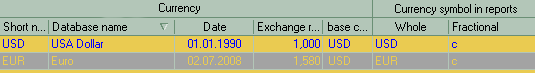
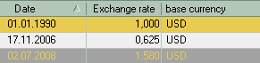

The main table at the top show the list of available currencies with their names and last set exchange rate to the base currency.
To add new currency description click the icon on the toolbar. To edit the description click  there.
there.

You may double-click in the table or select the particular currency in the tree to display it's exchange rates data.
You may then double click on any line to edit the rate or click the icon on the toolbar to add new.
Note: this is only a starting place for maintaining the final prices of the goods. Each document bears it's own setting of rates and prices, so the numbers here will only affect the newly created documents, not the old ones. Only unposting the already created document and re-editing pricing information can utilize the new settings made here.